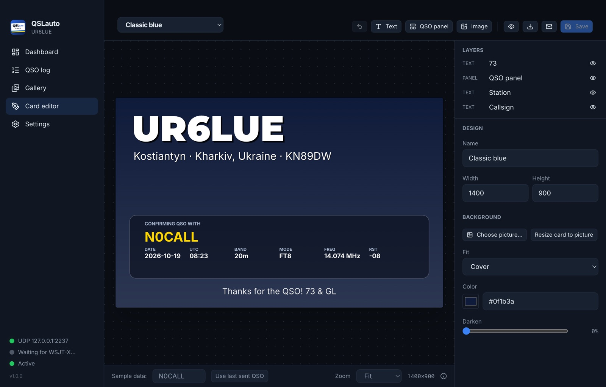
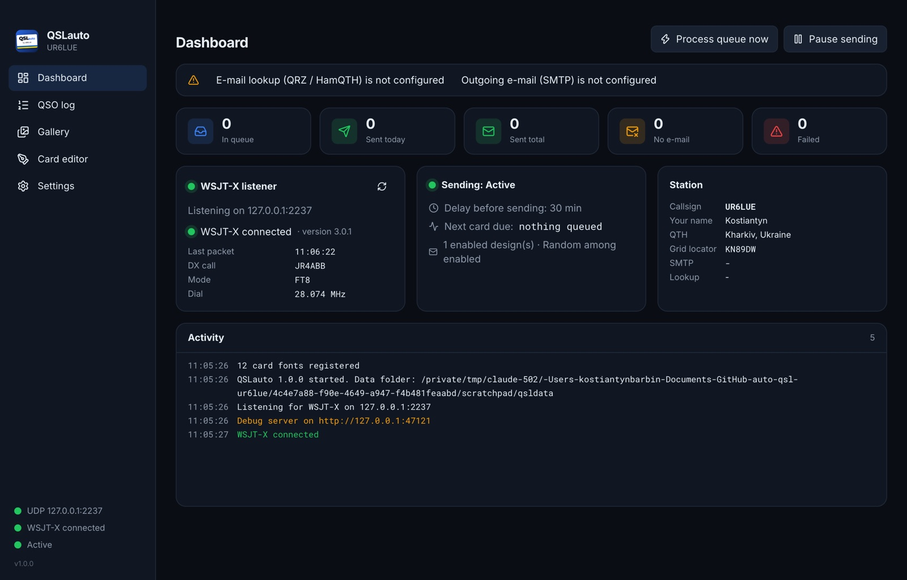
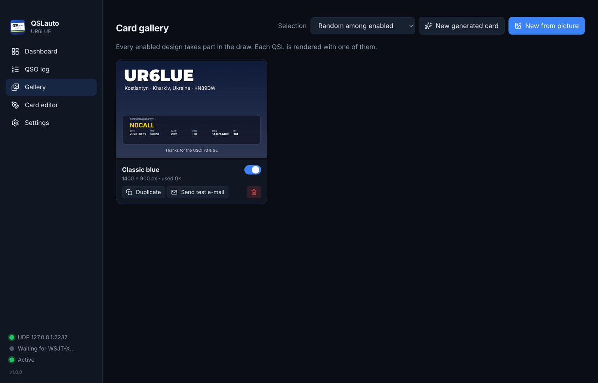

Log a QSO in WSJT-X. A QSL card goes out by e-mail. You do nothing.
Version 1.0.0 · MIT licence · no accounts, no telemetry, your e-mail, your cards.
Press Log QSO in WSJT-X as usual. FT8, FT4, JT65, whatever you run.
A delay you choose (30 min by default) lets you fix or delete the QSO first.
The other station's address is found on QRZ.com, with HamQTH as a fallback.
Your design, their callsign, date, UTC, band, mode and report, rendered pixel-exact.
Gmail with an app password, or any SMTP server. Each card lands in the log with a copy.



Built with Electron, React and TypeScript. SQLite log compatible with the original script. No cloud, no account: cards go straight from your mailbox to theirs.
config.ini? The original script does the same job in 500 lines: listens to WSJT-X, looks up the e-mail, draws the card on your photo and sends it through Gmail. The desktop app can import everything from it later.
$ python3 autoqsl.py # run, listen to WSJT-X $ python3 autoqsl.py --preview UR5XXX # draw a sample card -> preview.png $ python3 autoqsl.py --test-email # send a sample card to yourself $ python3 autoqsl.py --status # show the queue / sent log $ python3 autoqsl.py --lookup N0CALL # which e-mail would be usedOn a Mac, double-click
start_autoqsl.command and it sets up its own Python environment on first run.
| Platform | File | Requirements |
|---|---|---|
| macOS | QSLauto-1.0.0-arm64.dmg Apple Silicon QSLauto-1.0.0.dmg Intel | macOS 12 Monterey or newer |
| Windows | QSLauto Setup 1.0.0.exe | Windows 10 / 11, 64-bit |
| Linux | QSLauto-1.0.0.AppImage autoqsl-desktop_1.0.0_amd64.deb | glibc 2.31+, x64 |
| Script | autoqsl.py + start_autoqsl.command | Python 3.9+, macOS / Linux / Windows |